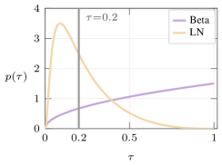
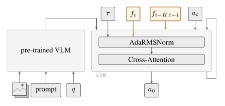

Vision-Language-Action(VLA, 시각-언어-행동 정책) 모델이 접촉-집약(contact-rich) 조작에서 실패하는 원인을 두 가지로 분해한다: (1) 정밀도 실패(precision failure) — flow-matching(연속 흐름 정합) 정책이 접촉 순간의 미세 보정을 학습하지 못함, (2) 힘 신호 실패(force failure) — 힘/토크(Force/Torque, F/T) 신호의 시계열 구조를 정책이 제대로 활용하지 못함. 해법 FACT(Fixing contact-rich failures by Aligning Contact-signals and Timing)는 노이즈 스케줄을 Logit-Normal(로짓-정규분포)로 바꾸고 시간 인식 힘 주입(time-aware force injection)을 결합해, 5개 실로봇 접촉 태스크에서 평균 66.0% 성공률을 달성(직전 최고 π₀.₅ = 39.0% 대비 +27pp, ForceVLA 40.5% 대비 +25pp). 총 2,500회에 가까운 실로봇 시험으로 검증.
VLA(Vision-Language-Action, 시각·언어를 입력받아 로봇 행동을 출력하는 대규모 정책 모델) — 예: π₀, π₀.₅, OpenVLA — 는 자유 공간 조작에서 인상적인 결과를 보였지만, USB·플러그·열쇠 삽입 같이 정밀한 물리 접촉이 필요한 상황에서는 급격히 성능이 떨어진다. 기존 연구는 이를 해결하려 힘 센서를 아키텍처에 추가하거나(ForceVLA) 학습 시 정규화(TA-VLA)를 붙였지만, 왜 실패하는지의 근본 원인은 규명되지 않았다.
저자들은 π₀.₅의 실패 궤적을 정밀 분석해 두 유형을 관찰했다.
FACT는 기존 VLA(π₀.₅ 또는 π₀) 백본을 그대로 두고 두 축을 동시에 손본다: (A) 학습 시 노이즈 샘플링을 정밀 보정용으로 재분배, (B) 추론·학습 시 힘 신호 통합을 시간축으로 확장.
Flow matching(연속 흐름 정합)은 매 학습 스텝마다 시각 τ∈[0,1]을 뽑아 "노이즈 섞인 행동에서 참 행동으로 흐르는 벡터장"을 학습한다. π₀ 계열은 Beta 분포로 τ를 뽑는데, 이 분포는 중·고노이즈(τ가 0.3~1.0)에 학습 신호를 몰아준다. 하지만 접촉 순간의 미세 재정렬은 이미 행동이 거의 완성된 상태(τ가 0에 매우 가까움)에서 이뤄지므로, Beta로는 그 구간이 데이터-희소해진다.
저자는 τ를 Logit-Normal(LN) 분포로 갈아탄다. 밀도함수는 다음과 같다(기호: m은 위치, s는 폭, logit(τ)=ln(τ/(1−τ))).
fT(τ) = (1/(s·√(2π))) · (1/(τ(1−τ))) · exp(−(logit(τ)+m)²/(2s²))
재매개변수: τ = σ(s·z − m), z ~ N(0,1) (σ는 로지스틱 시그모이드). 사후학습(post-training) 단계에서 m=1.5, s=1로 설정하면, τ<0.2 구간에 Beta 대비 약 6배 많은 그래디언트 신호가 배분된다. 사전학습은 원래 Beta 그대로 두어 대규모 표현학습을 해치지 않는다.
기존 force-VLA들은 현재 시점의 6D 힘/토크 벡터 f̄t 하나만 정책에 넣거나, 별도 손실을 붙였다. FACT는 세 요소를 결합한다.
(B-1) Contact State Modulation — 현재 힘으로 정규화층을 변조. 현재 힘 f̄t를 mean-pool 후 2-layer MLP φforce에 통과, 층별 AdaRMS(Adaptive RMSNorm) 스케일에 더한다.
수식: Δγ(f̄t) = Wγ·φforce(f̄t) ∈ ℝd,
hl = (γl(τ) + Δγ(f̄t))·RMSNorm(hl−1) + βl(τ) + hl−1·gl(τ).
기호: hl은 l번째 트랜스포머 층 출력, γl, βl, gl은 원래 flow-matching 조건 τ에서 오는 스케일·시프트·게이트, d는 임베딩 차원. 접촉이 감지되면 layer normalization의 "민감도(scale)"가 바뀌어 정책의 반응성이 접촉 상태에 맞게 즉시 조정된다.
(B-2) Contact History — 지난 30스텝 힘 시퀀스를 토큰으로 주입. 최근 H=30 스텝(2초)의 F/T 값 {ft−H, …, ft−1}을 각각 공유 causal 인코더로 임베딩해 얻은 30개 토큰을 행동 생성 모듈 입력 앞에 prepend. 이렇게 하면 "접촉 개시 → 힘 급상승 → 정착"이라는 시간 프로파일이 정책의 attention에 노출된다.
(B-3) Contact Gating — 비접촉 스텝의 그래디언트 차단. 힘 크기가 임계 δ 미만인 스텝에서는 힘 인코더 파라미터로 흐르는 그래디언트를 잘라내, 힘 인코더가 거의-0 잡음에 과적합하지 않게 한다.
| Method | Plug | USB | Button | Board | Key | Avg |
|---|---|---|---|---|---|---|
| π₀.₅ (기준) | 30.0 | 37.5 | 12.5 | 100.0 | 15.0 | 39.0 |
| π₀.₅ + LN | 50.0 | 47.5 | 57.5 | 87.5 | 37.5 | 56.0 |
| FACT (LN + 힘 주입) | 57.5 | 47.5 | 75.0 | 90.0 | 60.0 | 66.0 |
| ForceVLAπ₀.₅ | 32.5 | 37.5 | 12.5 | 77.5 | 42.5 | 40.5 |
| TA-VLAπ₀.₅ | 30.0 | 25.0 | 20.0 | 97.5 | 15.0 | 37.5 |
각 태스크 40회 rollout. FACT는 5개 중 4개에서 최고, 평균 66.0%로 차순위 π₀.₅+LN(56.0)·ForceVLA(40.5) 크게 상회. Board는 π₀.₅ 기준선이 이미 100%라 마진이 없음.
| Method | Plug | Key | Button |
|---|---|---|---|
| TA-VLA | 30.0 | 15.0 | 20.0 |
| TA-VLA + LN | 47.5 | 32.5 | 42.5 |
| ForceVLA | 32.5 | 42.5 | 12.5 |
| ForceVLA + LN | 57.5 | 30.0 | 30.0 |
Logit-Normal 스케줄만 적용해도 기존 힘-VLA들의 성능이 대부분 상승 — "정밀도 실패" 진단이 백본에 무관하게 유효함을 시사.
| Method | Plug | Key | Button |
|---|---|---|---|
| π₀ | 32.5 | 45.0 | 47.5 |
| FACTπ₀ | 70.0 | 50.0 | 60.0 |
| ForceVLAπ₀ | 55.0 | 42.5 | 42.5 |
| TA-VLAπ₀ | 30.0 | 27.5 | 27.5 |
FACT는 백본 비의존적: π₀에서도 Plug 32.5→70.0(+37.5pp) 등 큰 이득. VLA 접촉 실패의 근본 원인이 특정 백본이 아니라 학습 방식·힘 신호 처리에 있음을 확증.
| Method | Plug | Key | Button |
|---|---|---|---|
| FACT (풀) | 57.5 | 60.0 | 75.0 |
| − gradient threshold (게이팅 제거) | 42.5 | 27.5 | 57.5 |
| − current reading (순간 힘 제거) | 60.0 | 35.0 | 50.0 |
| − history (30-스텝 히스토리 제거) | 30.0 | 20.0 | 12.5 |


Figure 1(x1~x3): 성공·정밀도 실패·힘 실패 세 궤적의 힘 크기 |F| 시간 프로파일 대비. Figure 2(x4): 노이즈 스케줄 재분배. Figure 3(x5): 힘 히스토리·현재 힘이 AdaRMSNorm과 cross-attention에 주입되는 경로.
아직 추가 질문이 없습니다. 이 논문에 대해 더 궁금한 점을 물어보시면 답변을 여기에 정리해 추가합니다.